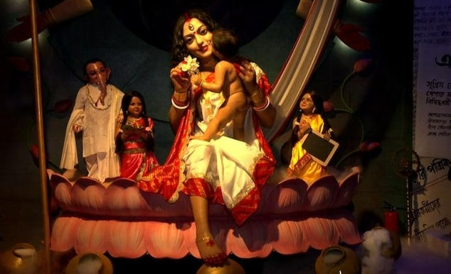

Durga Puja & it's History

ইয়া দেবী সর্বভূতেষু শক্তিরূপেণ সংস্থিতা।
নমস্তসৈ নমস্তসৈ নমস্তসৈ নমো নমঃ।।
ইয়া দেবী সর্বভূতেষু মাতৃরূপেণ সংস্থিতা।
নমস্তসৈ নমস্তসৈ নমস্তসৈ নমো নমঃ।।
This is the central and most well-known
mythological story associated with Durga Puja. According to Hindu mythology,
the demon king Mahishasura, who could change his form from human to buffalo,
became almost invincible due to a boon from Lord Brahma which states that no men
can kill him with any kind of astra (weapon).like He wreaked havoc on the earth, and the gods
were unable to defeat him. In response to their plead Tridev (Brambha, Visnu, Shiva)
created Goddess Durga from their energy and gave her all their powers and weapons along with
the other gods. Like Lord Shiva gave her a Trishul (trident)n, Lord Vishnu gave her a Chakra (discus),
Lord Indra gave her a Vajra (thunderbolt), Himavan, the personification of the Himalayas, gifted a lion as her
mount and so on. Wielding such strength and weapons, she waged a fierce
battle against Mahishasura for nine days and nights and eventually defeated and killed him
on the tenth day, which is celebrated as Vijayadashami or Dussehra and became 'MAHISHASURMARDINI'.
Mahalaya
Before the commencement of Durga Puja, there is a special day
known as MAHALAYA in bengali culture. It is believed that on this day, Goddess Durga
begins her journey from her heavenly abode to Earth. It is a time for invoking the
goddess and paying homage ('TARPAN') to one's ancestors through rituals and prayers.
In this auspicious day. artists used to draw the eyes of the idol ('CHAKSHU PRADAN').
On this day, Bengalis wake up early to listen to the "Mahalaya" recital on the radio,
which narrates the story of Goddess Durga and her descent to Earth.
Panchami
On the fifth day, the Durga Puja celebrations officially begin with the
unveiling of the goddess's face, which is known as "Bodhon." The idol is brought to the
pandal (decorated temporary structure) amidst much fanfare. This day marks the arrival of
the goddess and the beginning of the puja rituals.
Shashthi
This is the sixth day of the festival. It is the day when the goddess is
worshipped with various rituals, including the "PRAN PRATISTHAN" (giving life to the idol)
"Kola Bou Snan" (bathing a banana tree symbolizing the Gaesha's wife. In West Bengal, it is
believed that Lord Ganesha married a banana tree or Kola Bou. He married a banana tree to assure
his mother that she will never be hungry and will always be cared for) and "Nabapatrika Snan"
(bathing the nine plantain leaves, representing the nine forms of the goddess). Devotees observe
fasts and offer prayers.
Saptami
On the seventh day, elaborate rituals and prayers continue. People visit
pandals to seek the blessings of Goddess Durga and enjoy cultural performances, including
traditional dances and music. "Kola Bou" (the banana tree) is dressed in a sari and placed next
to Ganesha.
Ashtami
The eighth day is one of the most significant days of Durga Puja. It is
marked by a series of rituals, including the "Sandhi Puja," which takes place at the juncture
of the seventh and eighth days, signifying the climax of the battle between Durga and Mahishasura
. Devotees fast and offer "Anjali" (prayers) to the goddess. In this day all bengalis dressed in
traditional ware gather together in the pandal and offer Anjali to the goddess. This day is very
auspicious for bengalies.
Navami
The ninth day is dedicated to the worship of Goddess Durga's various forms,
including Mahakali, Mahalakshmi, and Mahasaraswati. Devotees offer prayers, and cultural programs
and processions are held in pandals across Bengal. "Siddhidatri" is the form of the goddess worshipped
on this day. "DHUNUCHI DANCE" is also performed this day in front of maa.
Dashami
This is the tenth and final day of Durga Puja. On Dashami, the goddess is bid
farewell with great emotion. After her victory over Mahishasura, Goddess Durga
returns to her husband Lord Shiva's abode in Kailash. This day all married women do 'BARAN' with Pan leaves of MAA and fed her sweets
taking her blessings they all bade maa an emotional farewell. After that they play with sindur they offered MAA
('Sidurkhela'). The idol of Durga is carried in a procession and immersed in a river
or water body, symbolizing her return to her heavenly abode. This procession is known as "Visarjan." After
Visarjan its time for "VIAJAYA DASAMI" when all youngers take blessings from their older, hug each other (symbol
of Harmony), people exchange sweets, gifts, and best wishes, and it's also time for cultural programs, including traditional dances and dramas.
These ten days of Durga Puja are a time of great cultural, religious, and social significance
for Bengalis, and the entire region comes alive with colorful decorations, processions, and celebrations.